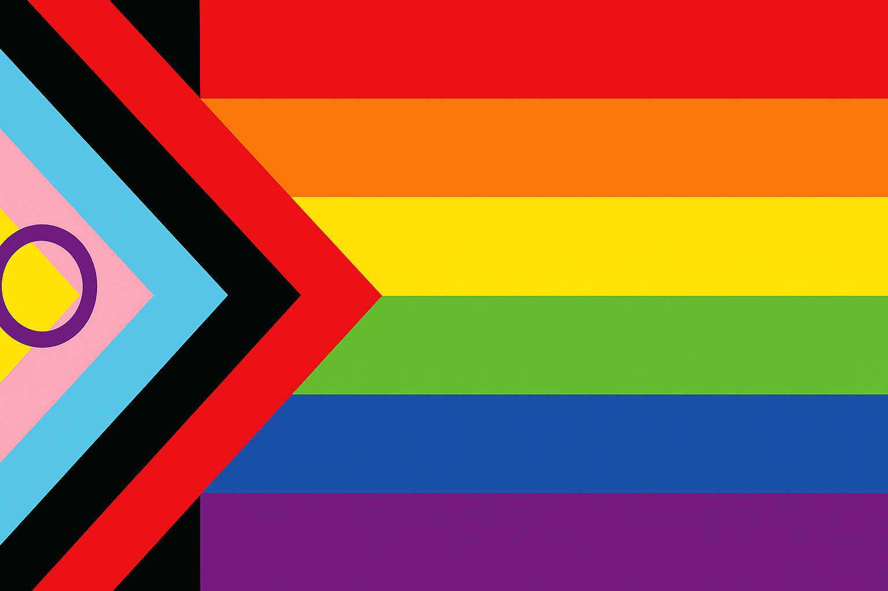

Conseils pour une Bonne Intégration

Source : [CHATGPT 5]
Pour bien vous intégrer, il est essentiel de comprendre que :
La culture française n’est pas identique à la culture africaine.
Même entre pays africains, les cultures varient.
Les perceptions du monde, des rapports sociaux et des priorités peuvent être différentes.
Diversité et Inclusion
La France est un pays laïc qui promeut l’intégration de toutes les communautés, indépendamment de l’origine ou du genre. Peu importe votre formation en France (ENSAI, ENSAE, ESA, ISFA), vous serez amené à travailler avec des personnes de différents horizons, y compris des personnes LGBTQIA+.
Dans ce contexte, il existe une tolérance zéro pour tout manquement au respect d’autrui et aux principes de la laïcité. Cela signifie qu’aucune forme de discrimination ou de non-respect ou encore d’ignorance n’est acceptée, que ce soit en cours, en projet ou dans la vie quotidienne.
Conseil :
- Acceptez-les, respectez-les, et collaborez sans jugement.
- Observez avant de juger, soyez attentif et logique.
- Évitez les préjugés : chacun a droit à sa façon de vivre.
Vie Professionnelle vs Vie Personnelle
Les étudiants en France font une nette différence entre vie professionnelle et vie personnelle. Ainsi :
- Vous travaillerez avec eux sur des projets,
- Vous ferez des devoirs en groupe,
- Vous assisterez aux mêmes cours et présentations.
Mais cela ne signifie pas qu’ils doivent systématiquement vous saluer ou engager la conversation en dehors de ce cadre (dans les couloirs, à la cafétéria ou dans la rue).
Conseil : saluez-les quand même, souriez, même s’ils ne répondent pas toujours. Cela crée un climat positif.
Politesse et Salutations
En Afrique, les liens se créent rapidement. En France, c’est parfois différent :
- Certains étudiants peuvent être surpris d’être salués par quelqu’un qu’ils connaissent peu.
- Les relations se construisent progressivement.
Astuce : continuez à saluer et à sourire. C’est un bon moyen de montrer votre ouverture et de créer peu à peu des amitiés.
Cela dit, deux possibilités s’offrent à vous :
Rester entre étudiants de votre communauté, ce qui peut sembler plus confortable au début,
Ou chercher à vous intégrer pleinement afin de découvrir leur manière de voir le monde et de partager la vôtre.
Je recommande vivement la seconde option, car elle enrichit votre expérience personnelle et professionnelle. Mais pour réussir cette intégration, il est important de connaître certaines spécificités de la vie des différentes écoles.
Intégration des associations.
ENSAI
Délégués des étudiants À l’ENSAI, il existe deux types de délégués :
Les délégués de classe (1, 2 ou 3 par classe),
Les délégués des délégués, élus par l’ensemble des délégués de classe.
Leur rôle principal est de représenter les étudiants auprès de l’administration, de faire remonter les problèmes et les suggestions, et de veiller à ce que les cours se déroulent dans les meilleures conditions.
Être délégué permet de mieux comprendre le fonctionnement de l’école :
- comment les décisions sont prises,
- comment les budgets des écoles du CAPESA sont financés,
- sur quels critères les étudiants intègrent l’ENSAI.
Vous bénéficiez également d’un droit de vote sur certaines décisions importantes.
Conseil : je vous encourage vivement à vous présenter aux élections ! C’est une excellente occasion de développer votre sens des responsabilités et de participer activement à la vie de l’école.
🎓 Bureau des Élèves (BDE) Le BDE est le véritable moteur de la vie associative à l’ENSAI. Il fédère de nombreux clubs et activités : musique, photo, ski, voyage, théâtre, jeux, sport, restauration, œnologie, entraide, développement durable… Le BDE gère également la cafétéria et organise les grands événements étudiants :
le Week-End d’Intégration (WEI),
les voyages annuels au ski et à l’étranger,
les soirées culturelles et de détente,
la publication du journal Plaquette Alpha.
À savoir : Le WEI est ouvert à tous les étudiants. Il se déroule en France ou à l’étranger et propose un programme d’activités variées. C’est un moment fort de l’année, et il n’est pas rare que des couples se forment lors de ce week-end ! Parmi les soirées les plus réputées, celle de Chartres est particulièrement attendue… amusement garanti ! 🎉
- 📊 ENSAI Junior Consultant Fondée en 1996, l’ENSAI Junior Consultant est la Junior-Entreprise de l’école. Elle met en relation des entreprises ayant un besoin d’études statistiques avec des étudiants de l’ENSAI qui les réalisent, offrant ainsi une première expérience professionnelle enrichissante et rémunérée.
- 🏢 Forum des Entreprises L’association Forum ENSAI organise chaque année un grand forum qui réunit plus de 60 entreprises. C’est l’occasion idéale pour rencontrer des recruteurs, échanger sur les métiers de la data et décrocher des stages ou des opportunités professionnelles.
- 🤝 ENSAI Alumni Créée en 1998, l’association ENSAI Alumni regroupe près de 4 000 anciens élèves travaillant dans tous les secteurs : fonction publique, finance, industrie, marketing, santé… Elle favorise les échanges entre les étudiants, les anciens, l’école et les entreprises, facilitant ainsi le networking et l’insertion professionnelle.
🏀 Sport et Intégration Le sport est l’un des meilleurs moyens de créer du lien à l’école. L’ENSAI propose un large choix d’activités :
Football, basketball, volleyball, handball
Tennis, badminton, tennis de table
Cross-training, course à pied
Ces cours sont encadrés par des intervenants diplômés et proposés d’octobre à mars (hors vacances scolaires). Depuis peu, l’école dispose d’un nouvel espace de sport au rez-de-chaussée, accessible librement de 7h30 à 19h30.
L’ENSAE
🎓 Bureau des Élèves (BDE) Le BDE est l’association centrale de la vie étudiante à l’ENSAE Paris. Il a pour mission d’animer la vie du campus et d’organiser les grands événements qui rythment l’année.
🏆 Bureau des Sports Le Bureau des Sports organise des compétitions inter-écoles et des rencontres officielles :
- Challenge Centrale Lyon, Coupe de l’X, TOSS, Raid, GOST, Coupes de France Étudiant·es
- Événements plus conviviaux : Nuits du sport, Week-end sportif, tournois amicaux
🎨 Bureau des Arts Le Bureau des Arts permet aux élèves d’exprimer leurs talents artistiques et culturels à travers des projets variés et des événements créatifs.
🌍 Bureau des Internationaux Cette association a pour mission d’accueillir les étudiants internationaux et de faciliter leur intégration grâce à des activités inclusives et des rencontres conviviales.
📊 EJE – ENSAE Junior Études ENSAE Junior-Études est une association à but non lucratif qui met en relation des entreprises (grands groupes, PME, start-ups) avec des étudiant·es de l’ENSAE. Ces derniers réalisent des missions professionnelles en appliquant leurs compétences en data science, finance ou actuariat.
🗣 AGORA AGORA organise des conférences et des débats au sein de l’école, permettant aux étudiants d’élargir leurs horizons au-delà des cours et d’aborder de nouveaux champs de réflexion.
🏢 Forum ENSAE Cette association organise chaque année des événements pour créer des opportunités de rencontre avec le monde de l’entreprise.
🤝 Trium ENSAE Trium ENSAE organise l’un des plus grands forums étudiants-entreprises de la région parisienne, réunissant de nombreuses entreprises et recruteurs.
🚀 StatUp StatUp est le club dédié à l’entrepreneuriat, à l’innovation et aux hackathons, un lieu idéal pour développer ses projets et collaborer sur des idées innovantes.
💰 ENSAE Finance & Investissement (EFI) EFI rassemble les étudiants passionnés de finance et d’investissement, et organise des événements, conférences et challenges dans ce domaine.
❤️ ENSAE Solidaire ENSAE Solidaire propose des projets humanitaires et solidaires, offrant la possibilité aux étudiants de s’impliquer dans des causes importantes et de donner de leur temps à ceux qui en ont besoin.
Pour aller plus loin De nombreuses autres associations existent à l’ENSAE. Vous pouvez les découvrir sur le site officiel : Associations étudiantes ENSAE
Bien sûr ! J’ai gardé ton ton convivial et informatif, mais j’ai rendu le texte plus fluide et plus agréable à lire, avec des phrases plus courtes et une meilleure progression.
L’ISFA
🎓 BDE – Bureau des Étudiants Le BDE organise des événements, soirées et activités d’intégration pour renforcer la cohésion entre étudiants et créer un esprit de promotion dynamique.
🏆 Bureau des Sports L’association sportive de l’école propose un large choix de disciplines et de compétitions pour les amateurs de sport, quel que soit leur niveau.
🎨 Bureau des Arts Le Bureau des Arts met en avant la culture et les activités artistiques afin de permettre à chacun de s’exprimer et de partager ses passions.
📊 ISFA Junior Conseil Cette Junior-Entreprise offre aux étudiants la possibilité de réaliser des missions pour des entreprises dans les domaines de l’actuariat et de la finance, leur donnant une première expérience professionnelle concrète et valorisante.
🤝 Alumni ISFA Le réseau d’anciens de l’ISFA, très actif dans les métiers de l’assurance et de la finance, est une ressource précieuse pour ton avenir : conseils, mentoring et opportunités professionnelles.
Le Master ESA d’Orléans
🎓 PROM’ESA Association phare du Master Économétrie et Statistique Appliquée, PROM’ESA fait le lien entre étudiants, alumni et entreprises partenaires. Elle organise régulièrement des forums, conférences, soirées et rencontres professionnelles qui dynamisent la vie du master.
🏛 UFR DEG – Faculté d’Économie, Gestion et Droit Plusieurs associations transversales peuvent t’intéresser, comme le BDE Économie-Gestion d’Orléans ou les clubs de débats tels qu’Orléoquence, pour développer ton aisance à l’oral.
🎭 Clubs culturels et sportifs de la ville Orléans offre une grande variété d’activités : théâtre, chorale, danse, musique ou sport, souvent avec des tarifs réduits pour les étudiants.
📅 Forums de rentrée Organisés par l’université et la ville, ces forums sont l’occasion idéale de découvrir facilement les associations et clubs disponibles.
Participer à des Activités Culturelles dans la Ville
Toutes les villes françaises disposent d’associations très diversifiées : sport, danse, langues, musique, natation, etc. L’adhésion peut être payante ou gratuite selon les structures.
Astuce : en début septembre, la plupart des villes organisent une journée portes ouvertes où les habitants peuvent visiter les stands des associations et s’inscrire directement.